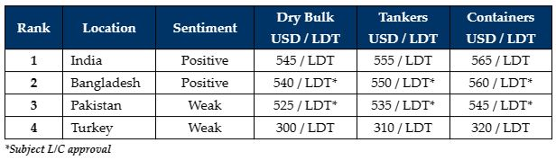

inWeekly Demolition Reports13/02/2023

An increase in the flow of tonnage has begun to buoy recycling markets and all potential locations are increasingly trying to secure vessels, in order to satisfy an progressively rampant demand that has built up over a record low influx of tonnage during a dreadfully quiet 2022.
Of course, India continues to remain the primary focus due to their far more stable market conditions and ability to finance new L/Cs regardless of vessel size.
Bangladesh and Pakistan continue to struggle with liquidity issues amidst a dire lack of U.S. Dollars in each country, despite continued hope that ongoing negotiations with regards to their respective IMF loans may bring some sort of relief to their respective ship recycling sectors (and more).
Lastly, the Aliaga market was understandably quiet after massive earthquakes rocked the Turkey and Syria this week that resulted in the tragic passing of over 10,000 souls.
Overall, the main supply of tonnage continues to arrive from the feeder container sector (few Panamax containers have yet to arrive), whilst there is also an increase in the flow of dry bulk vessels, as charter rates sink to fresh lows – especially after the Chinese New Year Holidays.
There seems to be little chance of seeing tankers this year, especially as charter markets push on to new highs – something which is long overdue, following the bloodletting witnessed in this particular sector over the last few years.
2023 has commenced in an overall positive fashion for the international ship recycling markets, with an increased flow of deals and a positive market with a healthy demand across nearly all locations – and it would seem that as soon as L/C issues are sorted in both Pakistan and Bangladesh, the industry can be sure of a busy and vibrant year ahead.
For week 6 of 2023, GMS demo rankings / pricing for the week are as below.

📄 Download PDF: Ship-recycling-market-insight-week-06-2023-Building-Up.pdfSource: GMS,Inc. ,https://www.gmsinc.net/gms_new/index.php/web